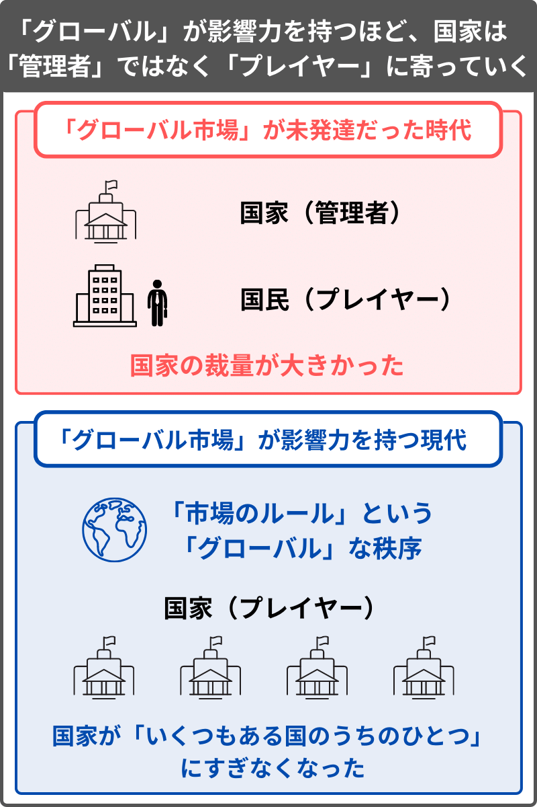
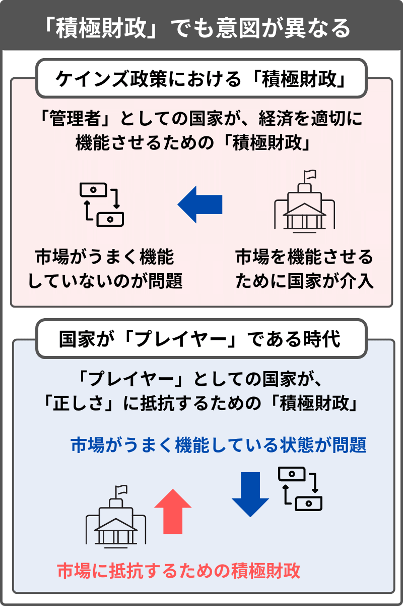

ここまで、第1〜4章で、「豊かさと正しさの相反」と「闘争〜反競争」の図式を提示し、第5章で、「反競争」の実践である「生産共同体」について説明してきた。
この第6章では、まず、国家の「積極財政」と「資本主義（グローバル市場）」について説明する。これらは、国家の支出によって実現する「BI」において、避けられない論点だからだ。
そのあとで、なぜ国家の政策として「BI」という方法が適しているのか、「国家（BI）」と「生産共同体」がどのように関係するのかを述べる。
目次
- 6.1 国家の「積極財政」はどこまでなら大丈夫か？
- 6.2 「積極財政」で得をする人と「緊縮財政」で得をする人
- 6.3 「資本主義」は、主に「正しさ」として作用する
- 6.4 「資本主義」が国家に対して「ブレーキ」をかけていた
- 6.5 「正しい」からこそ加害的に映る
- 6.6 「積極財政」を阻止する作用
- 6.7 国家に求められる役割が変化している
- 6.8 何が「非貨幣的」で、何が「貨幣的」か？
- 6.9 「ベーシックインカム」は「やや非貨幣的」
- 6.10 なぜ「ベーシックインカム」なのか？
- 6.11 ひとつの「集団性」を突出させずに「集団性」の総量を確保する
- 6.12 暴走した「集団性」に対処できるのは他の「集団性」
- 6.13 「国家」と「生産共同体」の対立と協調
- 6.14 「ベーシックインカム」は逆転の一手ではない
- 第6章のまとめ
6.1 国家の「積極財政」はどこまでなら大丈夫か？
ここから、まずは、「BI」を実現しようとする上で避けることのできない論点である、「財政」について説明をする。
現実的に「BI」を給付する場合、国家の財政支出を増やす「積極財政」になりやすい。大増税をしたり、他の社会保障費を大幅に削減する場合はその限りではないが、基本的には、「BI」の実現は「財政支出の増加」を意味することになる。
そこにおいて、「国家の財政支出はどこまでなら大丈夫か？」は、重要な論点だ。
まず、説明のための前提として、経済活動において、「家計・企業」と「国家」は、同じプレイヤーではないことを指摘したい。
ここでは、ひとまず、「家計・企業」を「プレイヤー」であると考え、「国家」を「管理者（運営側）」であると考えることにする。
- 家計・企業：プレイヤー
- 国家 ：管理者（運営側）
日本政府が日本円を発行しているように、日本のような国家は、自国の裁量で通貨を発行することができる。家計や企業が独自に通貨を発行しても、それが信用のあるものと見なされることは基本的にないが、国家が発行する法定貨幣は信用のあるものと見なされやすい。その点において、家計・企業と国家とでは、持っている権限の大きさが違う。
また、家計・企業のような「プレイヤー」と、国家のような経済の「管理者（運営側）」とでは、その目的が異なるという考え方がある。
「家計・企業（プレイヤー）」にとって、基本的に、利益を出すこと（貨幣を稼ぐこと）は望ましいとされる。
一方、「国家（管理者）」は、そもそも貨幣を発行する権限を持ち、貨幣を稼ぐことが目的であるとは言えない。国家が利益を出した（財政の黒字を積み上げた）からといって、それで国民の生活が悪くなってしまえば、「管理者」としては失格だろう。
通貨発行の権限があり、経済そのものに大きな影響力を発揮できる国家は、単にプレイヤーとして利益を出すのではなく、適切に市場を管理・運営し、社会全体を良くしていこうとする役割が求められる。
なお、「企業」の場合も、大企業になるほど、利益を出す以外のことが求められるようになりやすいのだが、とりあえずここでは、以下のように、「家計・企業（プレイヤー）」と「国家（管理者）」を対比して考える。
このように、家計・企業のような「プレイヤー」と、国家のような「管理者」は立場が異なるという前提を示した上で、ここからは、「国家は本当に管理者なのか？」について考える。
本章でまず指摘したいのは、過去の時代と比べて、国家が「管理者」でなくなりつつあるという状況の変化だ。
説明のため、まずは、国家が疑問の余地なく「管理者」である場合の例として、「国家と国民だけ」という閉じた系を仮定する。そこでは、世界には日本政府と日本人しか存在せず、全国民が政府と日本円に揺るぎない信頼を置いていて、何らかの反乱が起こることはないとする。この場合、国家は、「管理者」として非常に強い権限を持っていることになる。
このような状況において、国家は、国のために必要だと思った分野に対して、貨幣を刷って労働力を集中させるなどのことを行いやすいだろう。また、 「財政収支（プライマリーバランス）」を意識する必要もなく、税金は、単にインフレを抑制するための経済の調整手段くらいの位置づけのものになるかもしれ ない。
この場合、「BI」を実現しようとする上でも、財政については心配する必要がない。
しかし、現実の世界は、上の図のような「国民と国家だけ」だけではない。
実際には、「国民と国家」の外にまた別の「国民と国家」がいくつも存在し、それぞれが関係し合う「グローバルな世界」に我々は生きている。
このような「グローバル」な状況において、他国との関係を考慮に入れないわけにはいかない。
特に、日本のような国は、自国で賄えない資源を他国からの輸入に頼っている度合いが強いゆえに、日本円の信用（貨幣価値）が低下すると、生活が苦しくなりやすい。
日本円のような貨幣は、他国との関係によって価値が変動するものであり、ゆえに、他国（グローバル）の事情を無視することができない。
第5章（5.3）では、貨幣の信用が「正しさ（競争・反闘争）」に接続されているとして、以下を満たす場合に、貨幣価値が高くなりやすい（「貨幣的」になりやすい）とした。
- その国家に税金を納める企業に国際競争力があること（「競争」の重視）
- その国家が個人の権利などの国際的なルールを遵守していること（「反闘争」の重視）
- 国家の「財政収支」が公開されていて、それが健全であること
上の2つは第5章ですでに説明したが、3つ目にあたる「財政収支」について、ここで説明をしたい。
先ほど述べた「国民と国家だけ」の閉じた系の場合、他国との貿易が存在しない仮定なのだから、そもそも対外的な貨幣価値という概念がなく、ゆえに「財政収支」を意識する必要がない。
一方で、我々が現実に生きる「グローバル」な社会において、「財政収支」の数字が悪化しすぎないようにすることは、法定貨幣（日本円）の貨幣価値を維持するために必要だ。
貨幣価値が低下すれば、輸入品の価格が上がり、生活が苦しくなりやすい。極端に貨幣価値が下落（円が暴落）した場合は、社会が混乱に陥ったり、日常が破綻してしまう可能性もある。
日本は、自国の権限で貨幣を刷り、それを使って、例えば石油などの資源を購入できる。このように、自らの裁量で購買力を持つ貨幣を作り出せることは、日本という国家にそれだけの信用があることを意味する。しかし、当然ながらその信用は無尽蔵ではない。
日本円が「グローバル（貨幣的）」な価値を持つのは、「財政収支」を意識して、無根拠に信用を作り出しているわけではないことを対 外的に示す努力を続けているからだ。収支が大きく傾くような支出を続けると、やがてマーケットに日本円は信用できないと見なされ、日本円の貨幣価値は低下 していくだろう。
日本政府は、「財政赤字がどれだけ膨らんでもいいからとにかく金を刷る！」「国家の権限によって今までの赤字を全部リセットする！」といったこと が、理論上は不可能なわけではない。しかしそんなことをすれば、日本円の価値は大暴落するだろうし、グローバル市場を混乱させたとして、国際社会から非難 を浴びることにもなるだろう。
「財政収支」をごまかさず対外的に公開して、赤字が大きくなりすぎないようにすることは、貨幣価値を維持するために必要な努力になる。
「税は財源ではない」という考え方がある。実際に国家は、歳入のある範囲で歳出しなければならないわけではないし、そもそも今の日本政府は、歳入を超える歳出を毎年続けている。
一方で、税を財源と見立てて「財政収支」を意識することが、それほどおかしな考え方というわけではない。
税収を収入と見立てて、収支が赤字に傾きすぎないように意識しているからこそ、国家が発行する貨幣の価値が維持されている。もし国家の貨幣が、何の縛りもなく好き勝手に増刷できるものならば、それが信用できるものと外からは見なされないだろう。
「財政収支」を黒字にするのが目的ではないにしても、赤字が大きくなりすぎないように注意しなければならないのは、それが貨幣価値を維持するために必要なことだからだ。
もっとも、貨幣価値には様々なファクターが絡み、他国の事情なども関係してくるので、日本政府の赤字が多いからといって、一概に円安が確定するわけ ではない。ただ、原則としては、財政赤字が膨らむほど貨幣価値は低下しやすく、例えば日本が国民全員に月100万円を配るなどの極端な財政支出をした場 合、日本円の価値は暴落するだろう。
国家の財政について、「税は税源ではない」「自国通貨建て国債による財政支出には制限がない」「通貨発行権を持つ政府は財源のために税金を徴収する 必要がない」といった考え方がされることがある。これは、上で述べた「国民と国家だけ」のモデルのように、国家を素朴に「管理者」であると見た場合にはそ うなる。
しかし現在、国家が「管理者」である度合いは弱まり続けている。なぜなら、かつてよりも「グローバル」が影響力を持つようになっているからだ。
「グローバル」の影響力が強まるほど、「国家」は、経済政策において大きな裁量を持つ「管理者」ではなく、グローバル市場における「いくつもある国のうちのひとつ（プレイヤー）」にすぎなくなっていく。

本章でこれから説明していきたいのは、「資本主義（グローバル市場）」が影響力を強めるほど、国家の立場が「管理者」から「プレイヤー」になり、ゆえに「積極財政（国家の政策）」に求められる役割が変化していることだ。
ひとまず、冒頭で述べた、「国家の財政支出はどこまでなら大丈夫か？」という問い、すなわち「財政赤字がどの程度までであれば、貨幣価値を破綻させないまま、財政支出を続けることができるのか？」という問いに戻る。
この問いに対して、「わからない（確実なことは言えない）」というのが回答になる。
ある政策によってその国の貨幣価値がどう動くかは、それ自体が投資対象であり、もし正確にそれを読めるならば、投資や為替の売買によって大儲けでき ることになる。それが大勢にとっての投資対象である場合、「他の人がこう考えそうだからあえて自分はこうする」などといった人々の読みが積み重なり、予測 不可能な複雑系になる。そのため、少なくとも短期の予想は非常に難しい。ゆえに、「わからない」と言うべきなのだ。
以降では、「国家の財政支出はどこまでなら大丈夫か？」という問いを、「国家が財政支出を増やすこと、あるいは減らすことは、それぞれどのような性質を持つか？」という問いに変えて、「積極財政（支出を増やすこと）」と「緊縮財政（支出を減らすこと）」の特徴を説明する。
例によって本論では、「豊かさと正しさの相反」という図式による説明を試みる。
6.2 「積極財政」で得をする人と「緊縮財政」で得をする人
国家の政策について、今も、喧々諤々の議論が交わされている。
よくあるのは、「何らかの適切な政策（経済学的に正しい経済政策など）が行われれば、それが全員にとって良い結果になる」といった前提のもと、その正解が何かについて争われる議論だ。
しかし、本論では、「全員が得をする正解」があるとはせずに、何らかの政策が行われたとき、それによって得をする人と損をする人がいる、という説明の仕方を試みる。
本論ではここまで、「正しいから豊かになる（正しさと豊かさが両立する）」が倒錯であることを指摘してきたが、ここでも、「豊かさと正しさの相反」の図式を持ち出すことにする。
第4章（4.7）では、「豊かさ」が「長期的な可能性」を志向し、「正しさ」が「短期的な確実性」を志向することを述べた。それと接続し、本章では、「積極財政」が「豊かさ」で、「緊縮財政」が「正しさ」であると考える。
- 積極財政：長期的な可能性（豊かさ）：短期的なリスクを負って、長期的なリターンの獲得を目指す
- 緊縮財政：短期的な確実性（正しさ）：短期的なリスクを減らして、長期的なリターンを放棄する
「積極財政」には、短期的なリスクを負って、長期的なリターンを獲得しようとする性質がある。
例えば、出生支援のために大胆な「積極財政」を打ち出した場合、短期的には、インフレによって実質的に貯金が減ったり、輸入が不利になるなどして、 生活が苦しくなるリスクがある。しかし、人口の増加は、長期的な国力・経済力にとって最重要視すべきファクターだ。もし出生支援のために政府の赤字が膨ら んだとしても、長期的に人口が増えていけば、それを返済することは難しくない。
一方、「緊縮財政」には、短期的なリスクを減らし、長期的なリターンを放棄しようとする性質がある。
財政健全化のために支出を絞ると、貨幣価値が安定しやすく、すでに資産を持っている人の生活水準は維持されやすい。しかし、そうやって既存の秩序を 守り続けてもジリ貧で、将来のための投資が行われなければ、長期的には国力・経済力が弱まり、やがては貨幣価値も低下していく。
なお、このような関係は、人口動態ほどの長期スパンで見なくとも、「円安だと輸出に有利、円高だと輸入に有利」や、「インフレだと産業が育ちやすく、デフレだと購買力が高くなりやすい」などといった形で、ある種の経済のセオリーと見なされてもいる。
ようするに、「積極財政」が起こす「インフレ」は、「長期」でプラスになりやすく、「緊縮財政」が起こす「デフレ」は、「短期」でプラスになりやすい。
このような「豊かさ（長期）」と「正しさ（短期）」の相反を示した上で、「国家の財政支出はどこまでなら大丈夫か？」という問いについて言うと、その「大丈夫か？」という問い方自体が、「短期的な確実性（正しさ）」に寄ったものと言える。
「大丈夫であること（問題が起こらないこと）」を意図すると、「正しさ」を重視する「緊縮財政」になりやすいのだ。
第0章（0.4）や第4章（4.7）では、「BI」のような政策（積極財政）は、「正しさ」の文脈で説得力を持たせようとしても実現が難しいことを述べてきた。
「積極財政」は、「正しさ」ではなく「豊かさ」の方法であり、リスクを負ってリターンを獲得しようとする「長期的な可能性」のための方法として肯定されるものなのだ。
なお、「積極財政（豊かさ）」か「緊縮財政（正しさ）」かは、同じ国民の間でも、利害の対立が生じやすい。
例えば、資産はないが労働力を持っている若年層にとっては、短期的なリスクのデメリットよりも、長期的なリターンのメリットが上回る場合が多いだろう。
一方で、貯金や年金で生活している高齢層にとっては、長期的なリターンのメリットよりも、短期的なリスクのデメリットが上回る場合が多いだろう。
何らかの適切な経済政策が行われれば全員に利があるわけではなく、若年層にとっては「積極財政（インフレ）」が有利で、高齢層にとっては「緊縮財政（デフレ）」が有利、という対立がある。

少子高齢化が進む日本においては、「緊縮財政（正しさ）」が支持されやすい傾向にあるだろう。
本論では、今の日本社会において「豊かさ」に舵を切るような政治的決定が、選挙という方法では難しいとして、第5章で「生産共同体」という試みについて述べてきた。
「生産共同体」は、内側から法定貨幣（日本円）の価値を否定することによってインフレを促し、国家に「積極財政」を強制するような効果をもたらす。そのようなやり方で、ある種、強引に社会を「豊かさ」に傾けていこうとするのだ。
とはいえ、「生産共同体」を、「搾取されている若年層が、現状維持を望む高齢層に抵抗する」といった世代交代のための試みとすることには、待ったをかけたい。
たしかに、世代間の人口の偏りによって、停滞が拭い難いものになっているという側面はある。しかし、「特定の世代が自分たちの利益だけを考えていることが問題」という考え方からは、肯定的な可能性を見出しにくいし、また、実態の把握の仕方としても妥当なものとは言えない。
「豊かさと正しさの相反」という観点においては、むしろ今の高齢層のほうが、「集団性（豊かさ）」を強制された社会の中で生きてきて、それによって作り出された余剰に頼って、若年層が自由な社会を謳歌していることになる。
実際に、「正しいから豊かになる」という倒錯を真に受けている人は、若年層のほうに多いだろう。そのため、「個人性（正しさ）」の過剰によって未来が先細りしていくという問題に対して、その責任を高齢層の利己性に帰するのは、あまり妥当な見方ではない。
本論では、世代間の対立よりも、「経済学的に正しい選択をすれば全員に利がある」といったような、「正しいから豊かになる（豊かさと正しさが両立する）」という倒錯を問題視している。
そして、「正しいから豊かになる」という倒錯において、今も非常に大きな影響力を持っているのが、「資本主義」という概念だ。
本論ではすでに繰り返し、競争が「ブレーキ」であることを説明してきたが、ここでの文脈に照らし合わせて言うなら、「資本主義」が、国家に対して「緊縮財政（正しさ）」を強制するような働きをしているのだ。
「資本主義」が国家の「積極財政」を否定するように働くことは、「BI」を実現しようとする上で避けられない論点であり、以降では、改めて「資本主義」について説明をする。
- 「家計・企業」のような「プレイヤー」は、基本的には利益を出すことが望ましい。それに対して、自らの裁量で貨幣を発行できる「国家」は、利益を出すことが望ましいとは限らず、経済の「管理者（運営側）」としての役割を求められる。
- 国家は、財政を黒字にすることが目的ではないし、税収の範囲内で支出しなければならないわけではない。一方で、無根拠に貨幣を 刷っているわけではないことを対外的に示す指標のひとつが「財政収支」であり、それが悪化しすぎないように気を配ることは、貨幣価値を維持するために必要 になる。
- 「国家の財政支出はどこまでなら大丈夫か？」は、現在も議論の渦中にある。「積極財政」は、それが短期的なリスクを負って長期的 なリターンを得ようとする性質のものである以上、「それをしても大丈夫（何の問題も起こらない）」という「正しさ」において説得力を得ることが難しい。 「積極財政」は、「長期的な可能性（豊かさ）」の追求において肯定される性質のものになる。
- 経済政策において、適切な選択をすれば全員に利があるという前提のもと、「何が正解か？」について議論されやすい。しかし本論は、「豊かさと正しさの相反」のモデルを提示し、何らかの政策は、得をする層と損をする層に分かれると考える。
- 若年層にとっては、「長期的な可能性（豊かさ）」を重視する「積極財政」が有利になりやすく、高齢層にとっては、「短期的な確実性（正しさ）」を重視する「緊縮財政」が有利になりやすい。
- 少子高齢化によって、「短期的な確実性（正しさ）」が重視されるゆえにジリ貧の状況を抜け出しにくくなっている側面はある。しかし本論では、世代間の対立よりも、「正しいから豊かになる」という倒錯のほうを問題視する。
6.3 「資本主義」は、主に「正しさ」として作用する
まず、「資本主義」という言葉について、厳密に定義とまでは行かないが、すれ違いが生じない程度には認識のすり合わせをしたい。「資本主義」は幅広い概念ゆえに、それに抱くイメージが人によって様々だと思われるからだ。
すでに第2章（2.11）で説明したように、本論では、資本主義を、「自由競争（個人性）」と「資本蓄積（集団性）」が組み合わさったものと見ている。
だが、ここでは、資本主義に「集団性」の部分があることを認めつつも、それでも差し引きでは、資本主義は「個人性」として作用するものと考える。
なぜ資本主義が「個人性（正しさ）」として作用するのか？
それは、まず、「個人の自由」を認めることが前提にあるからだ。
市場には自然発生的な側面があり、何らかの形で「個人の自由」を制限しない限りは、市場競争が発生する。そして、その競争の結果を否定しない限りは、格差が発生する。つまり、自由を認めると競争を認めることになり、競争を認めると格差を認めることになる。
国家による徴税や再配分が強く機能しているからといって、自由が否定されているとは言えないが、これは程度問題でもある。例えば、稼いだ貨幣のう ち、国家に持っていかれる割合が0%であれば「資本主義」で、100%であれば「共産主義」になるとして、ではそれが何%までなら「資本主義」と言えるの か、というのは、意見が分かれるだろう。
ただ、理屈としては、「自由を認める→競争を認める→格差を認める」は繋がっている。
そして、「自由を否定しないゆえに格差が発生する」作用のことを、ここでは「資本主義」と呼ぶことにしている。
さらに、「資本主義（自由を認めること）」によって発生した「資本蓄積（集団性）」にしても、その目的は、さらなる貨幣を稼ぐことにある。
「資本主義」には、「資本蓄積」という「集団性」を発生させる側面があるが、それも、相手に貨幣を支払わせようとしなければならない「市場のルール」に規定されている以上は、結局は「個人性」として作用しやすい。
つまり、ここでは、以下の点において「資本主義」を、主に「個人性（正しさ）」として作用するものと考える。
- 「個人の自由」を認めるからこそ「資本蓄積」が生じる点
- 「資本蓄積」の目的がさらに貨幣を稼ぐことである点
このような理屈で、本論では「資本主義」を「正しさ」の作用としているが、しかし一般的に、「資本主義は加害的である（正しさに反する）」というイメージは根深い。
「資本主義が加害的である」というイメージにおいて、今でも強い影響力を持っている代表的な論者はマルクスだろう。
マルクスは、資本主義における不平等を批判し、同時に、資本主義に法的な正当性を与えた当時の近代国家をも批判した。実際に当時は、国家と資本が手 を組んで労働者を過酷な待遇に追いやり、利益を目的とした植民地支配に乗り出していた時代だった。そのような時代に生きたマルクスが、「国民国家」と「資 本主義」の結びつきを問題視したのは、おかしなことではない。
第2章（2.12）で述べたように、マルクスも、「理性（本能）」を重視する近代の思想家であり、資本主義における「集団性（資本蓄積）」の不当さや、国家という「集団性」の加害的な部分を問題視していたと言えるだろう。
しかし、資本主義が主に「個人性」として作用するものである以上、それを否定すると、むしろ「集団性」が過剰になってしまう。実際に、マルクス自身がそれを意図していたわけではないにしろ、共産主義国家は、資本主義国家以上に、個人にとっては加害的な政治体制だった。
本論の見方では、国家権力のような個人の自由を否定して同質性を押し付ける作用が「集団性」であり、資本主義のような競争する個人の自由を認める作用が「個人性」だ。
依然としてマルクスの強い影響化にある近代的な価値観を学習した者は、国家にしても資本主義にしても、「その加害性に対処する必要がある」と考えがちだ。しかし、本論は、「資本主義こそが、国家の加害性に対してブレーキをかけていた」と主張したい。それについて以降で説明していく。
6.4 「資本主義」が国家に対して「ブレーキ」をかけていた
本論では、「国家の権力（集団性）」と「資本主義（個人性）」が相反するとしている。
それはすなわち、「資本主義」が浸透していくことは、「国家の権力」が弱まっていくことを意味する。
国家は、その権力や暴力を機能させることで、市場に介入したり、借金を踏み倒したり、自らが作り出した信用（貨幣）を流通させたりなど、自由競争が作り出した「貨幣的」な秩序を無視することが可能だ。
しかし、近代化（グローバル化）が進むほど、そうやって国家が「市場のルール」を否定することが難しくなっていく。その理由のひとつは、「市場からうまく投資を呼び込んだ国家のほうが繁栄する」という状況が発生するようになるからだ。
国家は、やろうと思えば、権力や暴力によって個人よりも国家（集団）の都合を優先することができる。そしてそれは、前近代においてはごく当たり前の ことだった。しかし、人が国家を跨いで移動する「グローバル」な状況になるほど、個人を軽視する国家からは資本や人材が流出していき、長期的には国力が失 われてしまう。
「グローバル」な状況において、国家は、自国の弱体化を防ぐために、財産権、司法の独立、会計の透明性などの近代的な制度を確立して、投資家や労働者を多く呼び込もうとしなければならなくなる。
個人の権利の尊重は、国民が近代的な契約に目覚めたからというよりも、自由市場の働きに助けられる形で、つまり「近代的なルールを整備して市場を味方につけた国のほうが戦争に有利」という事情によって成立した側面がある。
そして本論では、そのような国家が市場を無視できない状況を、「資本主義が国家に対してブレーキをかけている」と考える。
資本主義という「ブレーキ（正しさ）」の働きにより、「国家（集団）」が「個人」を蔑ろにできなくなっていくのだ。
資本主義の加害的なイメージにおいて、「金を儲けたいという欲望が国家権力と結びつき、より凄惨な支配や侵略が行われるようになった」といったものがある。たしかに、過去には、資本主義に促される形で、多くの加害的な侵略が行われた。
しかし、営利目的ではない「非貨幣的」な侵略と、営利目的の「貨幣的」な侵略があったとして、程度問題ではあるが、後者のほうが加害性の度合いは低くなりやすい。
営利目的の「貨幣的」な侵略も、当然ながら加害的な行いである。しかし、そこにおける「投資を回収しなければならない」という資本主義のルール自体は、加害性を抑制するように機能した場合が多かっただろう。なぜなら、侵略した先の人間を皆殺しにしても金が儲かるわけではないからだ。利益を出すためには、単に侵略するだけではなく、現地の人間を教育し、近代的な価値観や合理的な考え方を理解させなければならない。
思想、宗教、人種などの違いが原因で始まるような、利益目的ではない「非貨幣的」な侵略と比べれば、「貨幣的」な侵略は、加害性が 抑制されたものになりやすい。経済的なリターンを望むからこそ、侵略先の相手に対する野蛮な行いには制限がかかり、侵略行為はむしろ、教育によって近代化 を迫り、市場を開放させようとするものになる。
ここでは、「国家の権力」と「資本主義」が結託して侵略を行ったという見方をせず、営利を目的とする侵略の仕方をしなければならなかったほど、「資本主義」が「国家の権力」に対してブレーキをかけていたと考える。
俯瞰的・長期的に見れば、資本主義（自己利益の追求）に駆り立てられた国家の侵略は、各地域における「伝統的・封建的な支配（ローカル）」を解体して、「近代的な価値観（グローバル）」を普及させていく過程だった。
「グローバル」が影響力を強めるほど、戦争の結果も、加害的なものになりにくくなっていく。例えば、日本はアメリカに戦争で破れたが、その後に、民 間人が意味もなく大量虐殺されたり、国家が壊滅的な状態に追いやられたわけではなかった。むしろ日本は、国際経済体制に組み込まれることで、戦後すぐに急 激な経済発展を遂げることになった。
もはや国家間の戦争という形があまり見られなくなった現在、かつては侵略国家が行っていた「ローカル」を解体して「グローバル」を普及させる「正しさ」の試みを、グローバル企業が引き継いでいる。
グローバル資本に支えられた現代の巨大グローバル企業は、世界中から人材を集め、最先端の研究開発をリードしている。それは、かつて国家が戦争に勝 つための研究開発にリソースを集中させたのと同様の、「集団性」として機能している側面がある。一方でそれは、貨幣を稼がなければならない「市場のルー ル」のもとで行われる以上、差し引きでは「個人性」として作用しやすい。実際に、グローバル企業は、貨幣を支払わせる（競争に駆り立てる）ことを目的とし たサービスを普及させることで、世界中の人々を「個人」に解体していこうとしている。
「資本主義（自己利益の追求）」は、戦争の加害性すらも飲み込み、市場競争という人が死なない争い（それどころか人の需要を満たそうとする競争）を実現した。しかし、それが「正しさ」として作用するがゆえに、市場競争の結果、世界中で人口が減少のトレンドに向かっている。
このように、「資本主義」は、加害的なものというイメージを持たれながらも、実際には加害性に対する「ブレーキ（正しさ）」として機能してきた。
そもそも19・20世紀は、科学技術などの向上によって、集団の加害的なポテンシャルが飛躍的に高まっていた時代だった。もし「資本主義」という「ブレーキ」が働いていなかったならば、これまでの歴史はもっと悲惨なものになっていた可能性が高いだろう。
6.5 「正しい」からこそ加害的に映る
「資本主義」が加害的に思える理由として、それがまさに「正しさ」をもたらすからこそ、「正しくない」存在である我々にとって、その生活の基盤を破壊していく作用であることを、指摘する必要があるだろう。
今の我々の存在が「正しさ」に反するものによって成立している経緯は、すでに第1〜3章までの内容で説明してきた。「正しさ」が厳密に適用された世界に我々という存在は相応しくなく、ゆえに「資本主義（正しさ）」は、我々にとって加害的に映るのだ。
愛情や規範、文化や伝統、結婚のような社会制度、ローカルな共同体などは、「正しい」ものではないが、我々の存在の前提条件でもある。それらを解体 していくのが「資本主義（正しさ）」であり、それを見て我々が、資本主義を自分たちにとって加害的なものであると見なすのも無理はない。
本論ですでに何度も説明してきたように、我々は、「豊かさ」と「正しさ」を混同するような倒錯を抱きやすい。例えば、「自然環境の保護」などの「正しさ」のための運動が、「資本主義」を敵視しやすいのも、その倒錯のひとつと言えるだろう。
「資本主義」は、人々を消費に駆り立て、無駄なものを作らせるようなイメージから、環境に悪いと思われやすい。だがそもそも、今の人間の存在自体が 「自然」に反する「不自然」なものである以上、人間の数を減らしていく「資本主義」の作用は、まさにそれを進めることこそが、自然環境にとって望ましいと 言える。
また、近年、SDGsと括られるような「正しさ」を目的とする運動が提唱されることもあるが、そのような運動は、「資本主義」への対抗ではなく、むしろ「資本主義」の帰結として起こる。これはすでに、第3章で「プラスの競争（競争）」と「マイナスの競争（反闘争）」の結託という形で説明した。
「競争」を「アクセル（豊かさ）」と錯誤すると、「反闘争」という「ブレーキ（正しさ）」が、それに反対する作用であると考えてしまう。しかし、「市場競争（競争）」であれ「SDGs（反闘争）」であれ、どちらも「正しさ」を目指す作用なのだ。
環境保護、格差、多様性などにおける「正しさ」の問題提起は、「資本主義」の否定ではなく、「資本主義」の作用の延長として起こるものであり、それらがいくら進んでも「ブレーキ（正しさ）」であるがゆえに、我々の生活は苦しくなり続けていく。
- 「資本主義」には、「自由競争（正しさ）」と「資本蓄積（豊かさ）」の両方の側面がある。しかし、「個人の自由」を認めるからこ そ「資本蓄積」が生じる点と、「資本蓄積」の目的がさらに貨幣を稼ぐことである点において、「資本主義」は、差し引きでは「個人性（正しさ）」として作用 する。
- 近代化（グローバル化）が進むほど、国力を増強しようとする国家が市場を無視できなくなり、個人の権利が尊重されるようになっていく。これは、「資本主義」の影響力が、「国家の権力」を上回り始めたことを意味する。
- 「資本主義」に後押しされた国家が営利目的の侵略を行った経緯から、「資本主義」は加害的なものであると見なされやすい。しか し、「投資を回収しなければならない」という資本主義による制限は、侵略において、国家の加害性を抑制する「ブレーキ（正しさ）」として機能した場合が多 かった。
- 「資本主義（自己利益の追求）」に駆り立てられた国家間の戦争は、長期的に見れば、各地域における「ローカル（伝統的な価値観）」を解体し、「グローバル（近代的な価値観）」を広めていく過程だった。
- 現在は、巨大グローバル企業が、軍事力による侵略という形ではなく、自社のサービスを普及させることによって、「ローカル」の解体をさらに進めようとしている。
- 環境保護、格差、多様性などにおける「正しさ」の問題提起は、「資本主義」の否定ではなく、「資本主義」の延長で起こっている。「資本主義」が「正しさ」の作用であるにもかかわらず加害的に映るのは、当の我々が「正しさ」に反する存在であるという事情がある。
6.6 「積極財政」を阻止する作用
ここまでの内容で、まず、国家の「積極財政」が「長期的な可能性（豊かさ）」において肯定されるものであることを説明し、次に、「積極財政」を行いうる国家の権力に「ブレーキ」をかけているのが「資本主義」であることを説明した。
つまり、「資本主義（グローバル市場）」の作用により、国家が「長期的な可能性」を追求するための「積極財政」を行うことが難しくなっているのが現状だ。
一般的に、「経済成長することで国が豊かになる」と思われている。だが、ここまでの内容を踏まえて言うならば、「経済成長しなければ不利になる」という形で、国家の権力を制限している作用が「資本主義（グローバル市場）」なのだ。
国家は、国民の合意さえあれば、市場から低い評価を受けることを覚悟で、大胆な「積極財政」によって出生を支援するなど、「長期的な可能性」を重視することができる。
だが、それをやって財政収支が大きく悪化し、インフレになった場合、少なくとも短期的には、生活水準が低下しやすい。「グローバル」な社会になったからこそ、インフレによる輸入の不利が、生活苦に直結しやすくなる。
市場の秩序を無視して「積極財政」を行おうとする国家に対して、「グローバル市場」は、貨幣価値の低下（インフレ）というペナルティを与えるのだ。
加えて、国家が「長期的な可能性（豊かさ）」を重視しようとする試みは、多くの場合、「個人」である国民の反感を買う。出生支援は、ようは「市場的 な秩序を否定して、子供を産んだ人や産みそうな人にリソースを偏らせる」ことだが、それは今の国民の多くにとって、不公平だと感じやすいものだろう。
つまり、「資本主義（グローバル市場）」は、個人の「生活水準」や「公平感」を盾にして、国家による「集団のため」の試みを制限しようとする作用だ。
第3章（3.3）では、「世界」と「個人」が接続し、「上（グローバル）」と「下（国民）」から「中間（国家）」に抵抗する動きが起こる図式を提示した。
「グローバル市場」は、個人の需要を満たす商品を提供し、国民（個人）は、そのような市場競争における勝者に憧れる。また、「グローバル市場」は、 市場を無視する国家に対して貨幣価値の低下というペナルティを与え、それを嫌う国民が政策を支持しないという形で、国家の「集団性」が否定される。
このような、「グローバル」と「個人」の結託によって、国家の「集団性」が抑えられている。
この作用は、決して悪いものではない。政治が腐敗している独裁国家や、個人の権利を守る制度が未整備の国家は、たとえ天然資源などを有していても、 経済的には低い地位に甘んじなければならない。そして、それを解消しようとする過程で近代化が進み、人権が尊重されるようになっていく。
ただ、今の日本のような国では、むしろ「正しさ」の過剰が問題になっている。
社会が「正しさ」に向かっていく流れは動かし難く思えるかもしれない。しかし、誰もが常に利己的なわけではなく、「集団のため・国家のため・後の世 代のため」を考えようとする人は少なくない。また、たとえ経済成長を重視する立場だったとしても、長期では人口の増加が経済力に繋がりやすいことに、ほと んどの人が同意するだろう。
「正しいから豊かになる（市場によって豊かさがもたらされる）」という倒錯から脱すれば、まだ「長期的な可能性」を目指す政策にも、合意が成立する余地はある。そのためにこれから説明したいのは、過去と比べて、経済政策において国家に求められる役割が変化していることだ。
6.7 国家に求められる役割が変化している
先に、「グローバル市場」が影響力を強めるほど、もはや国家は、経済のコントロールにおいて強い裁量を持つ「管理者」ではなく、「いくつもある国のうちのひとつ（プレイヤー）」になっていくことを述べた。
いまだに、国家の経済政策に関する議論の多くは、「国家は、経済の調整において強い影響力を発揮できる管理者である」という前提のもとに行われることが多い。
しかし、「グローバル市場」が影響力を持つほど、国家の立場が「管理者」から「プレイヤー」になり、それに伴って求められる役割が変化している。
国家が「管理者」だった時代は、国家の経済政策には、「安定した市場」を運営する「ブレーキ」の役割が求められていた。
一方で、国家が「プレイヤー」になった現在、国家には、「グローバル市場」という「ブレーキ」の作用に対して、それを突き破るための「アクセル」を踏む役割が求められている。
- 国家が「管理者」だった時代の経済政策 ：「安定した市場」を維持すること（ブレーキ）を求められた
- 国家が「プレイヤー」である時代の経済政策：「安定した市場」を突き破ること（アクセル）を求められる
まず前提として、20世紀以前の市場は、今よりもずっとルールが未整備で、乱脈な、問題ばかりが起こるものだった。そして、「恐慌（生産量の増加と いう本来ならば望ましいことが起こっているはずなのに、企業の倒産や失業が相次ぐ）」などの深刻な社会問題にいかに対処するかが、その時代の経済政策の大 きな関心だった。
現在も、不況、バブル、破綻、恐慌などの問題がなくなったわけではない。しかし今は、少なくとも過去と比べて、市場を安定させるための経済政策は適 切に行われるようになっているし、会計や情報公開などのルールも整っている。「グローバル市場」であるがゆえに、何らかの問題がひとつの国家のコントロー ルを離れた「世界的な危機（グローバルな経済問題）」になりやすいのだが、「経済的な混乱」の程度で言えば、例えば、先進国の銀行預金が一晩にして紙屑に なるような劇的なことは起こりにくくなっている。
20世紀以前に重視されたような「市場を安定させるための経済政策」は、むしろそれが成功しているがゆえに、今は「ブレーキ（正しさ）」の過剰が問題になっていると、本論では考える。
そもそも、国家がまだ「管理者」だったかつての時代は、「集団性」が過剰な社会だった。
当時は、国家は国民に対して強い権力を発揮できたし、伝統的な家族観や地域共同体などの「ローカル（集団性）」も今より強く機能していた。
「集団性」が過剰な時代だったからこそ、「市場」という「ブレーキ（正しさ）」を機能させる必要があり、それゆえに「市場を安定させるための経済政策」が求められた。同時に、国家が「管理者」として強い権限を発揮しやすかったからこそ、それを行うことができた。
「不況であればインフレ政策、好況であればデフレ政策」といったある種の経済政策のセオリーのようなものがあるが、これは「安定した市場」が重視さ れた時代のものであり、経済における「均衡」が意識されている。本来であれば均衡状態に向かうはずの市場が不均衡に陥っているという問題に対して、それを 正常に機能させるために経済政策が必要、という考え方だ。
ただ、第2章（2.2）で述べたが、サピエンスにとって「均衡している状態（自然）」は「個人性（正しさ）」を意味する。経済においても、「均衡（市場が問題なく機能している状態）」は、それが「正しい」状態であるがゆえに、国家のような「集団性」を衰退させていく。
「市場によって豊かさが生産される」と考えると、生活不安や人口減少のような問題に対しても、「均衡状態（市場が安定して機能している状態）」を目 指せばいいとなりやすい。しかし、本論でここまで述べてきたように、そもそもの「市場によって豊かさが生産される」が倒錯であり、「個人性」による停滞が 続く今の先進国に必要なのは、「均衡」を打ち破るための「積極財政」なのだ。
「市場」が「正しく」機能しているがゆえに、もはや国家はかつてほど強い権限を持たない「プレイヤー」にすぎない。そして、そうであるからこそ国家には、「均衡」を打ち破るための「集団性（積極財政）」を強く機能させる役割を求められている。
かつてとは違い「正しさ」が過剰な社会だからこそ、「国民の豊かさを重視する枠組みとしての国家」が要請されるのだ。でなければ、ますます縮小（人口減少・経済力の低下など）が進んでいくだろう。
20世紀以前の経済学においては、市場の自動調整機能を重視するか、国家の積極的介入（ケインズ政策）がなければ市場が機能しないと考えるか、という対立があった。ただ、このような議論においても、その主眼は「いかに市場を問題なく機能させるか」にあったと言える。
本論で述べている「積極財政」は、いわゆる「ケインズ政策」によるものとは意図が異なる。
「市場によって豊かさが生産される」という前提のもとで、そのような市場を機能させるために国家が介入すべきという話ではなく、 「市場は生産を抑制するブレーキである」という前提のもとで、それに抵抗するため、市場に評価されにくい出生などに支出することが、本論において今の国家 が行うべきとする「積極財政」だ。
つまり、「市場がうまく機能していないから介入」するのではなく、「市場がうまく機能している状態（正しさ）」に抵抗するための「積極財政」になる。

よくある、「円安になれば輸出が伸びて、円高になれば輸入が有利になる（円高による不況と円安による好況を繰り返す）」といった経済の見方は、国家に盛衰があることを捨象して（国家間の力関係が変化しないとして）、均衡を描くモデルと言える。
しかし、「人口が減っていく・供給能力そのものが落ちていく」といった国力の低下が原因のインフレ（円安）の場合、そのあとで好況がやってくるとは限らない。これからの日本が直面するのはそのような状況かもしれず、だとすると、円の価値は低下し続けていくだろう。
そもそもの自力が落ちていくことによる衰退は、「正しさ」を重視するほど、確実にそれが進んでいく。状況を打破するためには、「豊かさ」を重視する政策に舵を切る必要があるが、それは、今までかろうじて維持していた状況を、急に悪化させるリスクを負うものになる。
本章では、先に、「短期的なリスクを減らして、長期的なリターンを放棄する」のが「短期的な確実性（正しさ）」の重視であり、「短期的なリスクを負って、長期的なリターンの獲得を目指す」のが「長期的な可能性（豊かさ）」の重視であると述べた。
つまり、「正しさ」には、「急に悪くなりにくいが、余剰を少しずつ切り崩していく」性質があり、「豊かさ」には、「長期的に余剰を増やしうるが、一気に悪くなるリスクを負う」性質がある。
今の日本のような国が追いやられている状況は、いわば、「じわじわ状況が悪くなっていくなか、それを打開しようとすると、今度は一気に悪化してしまうかもしれない」といったものだ。
そのような状況における「積極財政」は、経済政策の観点からは、インフレが進んでいくなか、さらなるインフレ誘導に舵を切らなければならないことを意味する。
本論では、選挙や政治的議論によって大胆な「積極財政」に方向転換することは難しいとして、第5章で、内側から貨幣を否定してインフレを引き起こし、ある種「積極財政」と同様の効果を国家に強制する、「生産共同体」について述べてきた。
しかし、以降で述べるが、集団が大規模に協力し合うことが「豊かさ」の源泉であり、「生産共同体」と「国家」は、対立し合う部分がありながらも、互 いに協調して「豊かさ」を目指す関係であることが望ましい。本論では、「生産共同体」と並んで、国家による「BI（積極財政）」が、これから「豊かさ」を 目指す上で有効な方法であると考えている。
ここで述べたかったのは、「経済政策として正しい」からこそ「積極財政」をするべき、としているわけではないことだ。
今も、「政府が正しい経済政策を実行していないから問題」という形で議論が行われやすいが、むしろ、「正しく市場が機能している状態」こそが、国家が少しずつ衰退していく原因なのだ。
6.8 何が「非貨幣的」で、何が「貨幣的」か？
ここで、これまでの内容の繰り返しにもなるが、政府の政策において、何が「長期的な可能性（豊かさ）」を重視する「非貨幣的」なもので、何が「短期的な確実性（正しさ）」を重視する「貨幣的」なものかを、改めてまとめたいと思う。
まず、「増税」は「非貨幣的」で、「減税」は「貨幣的」になる。
一般的に、「減税」によって経済を促進することが「豊かさ」のためと思われがちだが、「市場のルール」が「豊かさ」を評価できず、「国家」という枠 組みに「豊かさ」を評価できる可能性がある以上、市場の秩序に対して国家の権力を発揮しようとする「増税」は、「非貨幣的」な政策になる。逆に、市場が作 り出す秩序を重視しようとする「減税」は、「貨幣的」な政策になる。
「どれだけ税を取るか（増税か減税か）」だけでなく、「どのように税を取るか」も、考慮すべき要素だ。
ここでは、「競争の上位に多く課税」すると「非貨幣的」で、「全員に同じように課税」すると「貨幣的」になると考える。
「競争の上位（金持ち）に多く課税」することは、市場競争に勝つリターンを少なくすることを意味し、市場が作り出す秩序を否定する「非貨幣的」な政 策になる。このような方針を進めた場合、「非貨幣的」であるがゆえに、「グローバル市場」からペナルティを受けやすい。例えば、所得税・法人税・資産税を 増やしすぎると、その国から資本が流出しやすくなる。
逆に、「競争の中位・下位も含めた全員に同じように課税」すること、つまり累進税の程度を弱めて幅広い層に課税することは、市場競争の結果を肯定す る「貨幣的」な政策になる。このような方針を進めた場合、出生やインフラや治安維持などにおいて重要なリソースを中間層から奪うことになり、長期的には社 会が衰退しやすくなる。
ここまでは「税」を論点にしてきたが、国家が財政支出をするとき、必ずしも徴税をする必要はない。国家は、財政収支の悪化を覚悟で支出を増やす「積極財政」が可能である。逆に、財政収支が悪化しすぎないように支出を減らす「緊縮財政」を行うこともある。
本章ですでに説明してきたように、「積極財政」は「非貨幣的」、「緊縮財政」は「貨幣的」になる。
財政収支は、その国の貨幣価値を左右するファクターであり、赤字が増えると「貨幣価値が低下（非貨幣的）」しやすくなり、収支が健全化すると「貨幣価値が上昇（貨幣的）」しやすくなる。
貨幣価値が低下するリスクを負って支出を増やすのが、「非貨幣的」な政策である「積極財政」で、貨幣価値を維持するために支出を減らすのが、「貨幣的」な政策である「緊縮財政」だ。
最後に、政府が「何に対して支出するか」によって、「非貨幣的」か「貨幣的」かが大きく分かれることになる。
これについてはすでに、前章までの内容で、「形式的な平等（豊かさ）」と「実質的な平等（正しさ）」という形で説明した。
「形式的な平等」のために支出すると「非貨幣的」で、「実質的な平等」のために支出すると「貨幣的」になる。
例えば、「BI」のように、全国民にまったく同じ額面を支出する「形式的な平等」の場合、「市場が作り出す秩序」よりも「国民」という枠組みを重視することになり、「非貨幣的」な政策になる。
一方、今の社会保障制度のように、弱者性を認められた者に優先的に支出する「実質的な平等」の場合、すべての人の権利を尊重しようとする試みではあるが、「相対的な競争（マイナスの競争）」が起こり、「貨幣的」な政策になる。
ここまでの話をまとめると、以下のようになる。
- 「増税」→「非貨幣的」、「減税」→「貨幣的」
- 「競争の上位に課税」→「非貨幣的」、「全員に同じように課税」→「貨幣的」
- 「積極財政」→「非貨幣的」、「緊縮財政」→「貨幣的」
- 「形式的な平等」→「非貨幣的」、「実質的な平等」→「貨幣的」
政府の方針が、「非貨幣的」か「貨幣的」かは、上の各要素の総計がどちらに寄っているかで決まる。
そのため、「増税」すること自体は「非貨幣的」でも、その他が「貨幣的」だったならば、全体の方針としては「貨幣的」になる場合があるし、その逆もある。
例えば、政府が、中間層や子育て世代に多く課税（全員に同じように課税）し、財政支出を抑えて貨幣価値を維持（緊縮財政）しようとし、主に社会保障費（実質的な平等）のために支出するなら、たとえ「増税」したとしても、トータルでは「貨幣的」になる。
逆に、「減税」すること自体は「貨幣的」だが、中間層や子育て世代の税を減らし、財政収支の悪化を覚悟して出生支援などに支出し、社会保障費を削減するならば、トータルでは「非貨幣的」になる。
「増税」するがトータルでは「貨幣的」、「減税」するがトータルでは「非貨幣的」、といったパターンはよく見られるもので、それが混同の原因になりやすい。だが、先に述べた理由で、「増税」自体は「非貨幣的」で、「減税」自体は「貨幣的」なのだ。
- 国家は、「積極財政」によって、「長期的な可能性（豊かさ）」を重視することができる。しかし、それをやろうすると、「グローバ ル市場」から貨幣価値の低下などのペナルティを受け、また、それを嫌う国民が政策を支持しないという形で、「上（グローバル）」と「下（個人）」から国家 の権力が制限される。
- 「グローバル市場」が影響力を持つほど、国家は「管理者」から「プレイヤー」になっていく。現代の国家は、かつてほどは市場に強く介入できる力を持たず、「グローバル」のなかの数ある国のうちのひとつである。
- 国家が「管理者」だった時代には、「市場を安定させるための経済政策」が求められていた。当時は「集団性」が過剰な社会だったので、「市場」という「ブレーキ（個人性）」を機能させることが必要だった。
- 国家が「プレイヤー」になった今、国家には、「グローバル市場」が生産を抑制する「個人性」として作用しているのに対して、それを突き破る「アクセル（集団性）」を機能させて、国民の「豊かさ」を獲得しようとする役割が求められている。
- 「政府が正しい経済政策を実行できていない」ことが問題とされやすいが、むしろ、従来の経済政策が成功していることによる「正しさ」が停滞の原因であり、その「正しさ」を打ち破るための「積極財政」が求められている。
- 国力そのものが落ちていくことによる貨幣価値の低下（インフレ）の場合、そのあとに好況がやってくるとは限らない。日本の現状 は、「じわじわ状況が悪くなっていくなか、それを打破しようとすると、今度は一気に悪化してしまうかもしれない」といったものだが、「豊かさ」を目指すの であれば、インフレが進むなか、さらなるインフレを進めなければならない可能性がある。
- 国家の政策において、「増税」「競争の上位に課税」「積極財政」「形式的な平等」が「非貨幣的」にあたり、「減税」「全員に同じように課税」「緊縮財政」「実質的な平等」が「貨幣的」にあたる。
6.9 「ベーシックインカム」は「やや非貨幣的」
本章はここまで、以下のことを述べてきた。
- 「資本主義（グローバル市場）」が「ブレーキ（正しさ）」として作用すること
- 現在の国家には、「グローバル市場（正しさ）」に対抗するための「積極財政（豊かさ）」が求められていること
- 国家の政策において、何が「非貨幣的」で、何が「貨幣的」かの整理
これを踏まえて、以降では、なぜ「ベーシックインカム」という方法なのか、そして、第5章で述べた「生産共同体」と「BI」がどのように関係するのか、について述べていく。
本論でここまで述べてきたように、「BI」は、「形式的な平等」であり、「非貨幣的」な支出の仕方になる。
ただ本章では、「BI」を、それほど「非貨幣的」な程度が強くない、「やや非貨幣的」な方法であると主張したい。
第4章までは、「BI」が「正しさ」ではなく「豊かさ」を重視する性質のものであることを強調してきた。それは嘘ではないのだが、ここで付け加えたいのは、「BI」には、「正しさ」にも配慮する性質があることだ。
「非貨幣的」か「貨幣的」かは、きっぱりと二分されるものではなく、程度問題でもある。そして、「BI」は、「非貨幣的」ではあるものの、そこまで「非貨幣的」に強く振れていない、「やや非貨幣的」という特徴のものになる。
「全国民に無差別・無条件で同額」という「BI」の定義からは、「形式的な平等（非貨幣的）」の極地のような印象を受けるかもしれないが、決してそうではなく、「BI」はむしろ「実質的な平等（貨幣的）」にも配慮する性質を持っている。
「BI」が「やや非貨幣的」に留まる理由として、以下が挙げられる。
- 「貨幣」を配る政策である以上、貨幣価値を維持する努力を続ける必要があるから
- 「全員同じ」であるがゆえに、特定の層を優遇する「強い価値判断」が機能しにくいから
- 国家という集団が「大きな集団（グローバル）」だから
まず、「貨幣を配る政策という時点で、ある程度は貨幣的」になる。
「BI」として貨幣を配っても、それによって極端なインフレが起こってしまえば、配られた貨幣は購買力として機能しない。貨幣を配る政策は、「貨幣的」であろうとする（貨幣価値を維持しようとする）努力とセットでなければ意味を持たない。
次に、「全国民に無差別・無条件で同じ額面」であろうとする「BI」は、特定の属性だけを優遇しようとする国家の「強い価値判断」を否定する性質がある。
この場合の「強い価値判断」とは、「特定の性別や人種を優遇、若年層を優遇、子供を持つ世帯を優遇」など、何らかの選別によってより強い「集団性」 を機能させようとすることだ。「全員同じ」である「BI」は、そのような価値判断を介在させないゆえに、「非貨幣的」に行きすぎない性質を持つ。
最後に、給付対象である「全国民」という単位が、非常に大きい（グローバルに近い）という点において、「BI」は、ある程度は「貨幣的」になる。
第3章で、「世界・個人」の両極を「グローバル」、中間を「ローカル」とする図式を提示した。この図式において、日本のような巨大な集団は、「中央（最もローカル）」よりは「世界（グローバル）」のほうに寄っていると考えることができる。
そして、「全国民（巨大な集団）」に対して一律に給付する「BI」は、「中央（最もローカル）」よりは「世界（グローバル）」の側に寄っている点において、「非貨幣的」な程度が抑えられていると考えることができる。
ではここで、国家の政策として、「BI」よりもさらに「非貨幣的」な度合いを高めようとする場合を考える。
その場合、例えば、「BI」の適用範囲を「全国民」よりも絞れば、「非貨幣的」な度合いが強まりやすい。
特定の性別や人種、何らかの義務を果たした者、何らかの条件を満たした者など、「全国民」よりも範囲を絞った対象に「同じ額面」を給付するならば、それは、「BI」よりもさらに「非貨幣的」な性質のものになる。
このような「強い価値判断」を機能させる国家のやり方は、基本的に「正しさ」に大きく反するものだが、現実的にありそうなものとしては、「子ども手当」が考えられる。
「子ども手当」は、出生に携わっている国民の優遇を意味し、「BI」よりも「非貨幣的」だが、現在も実現が検討される政策のひとつであり、「正しさ」に反しすぎている例とまでは言えないだろう。
「子ども手当」を、「18歳以下の全国民に無差別・無条件で同額の現金を支給する制度（給付は保護者が受け取る）」と定義したとする。その場合、「子ども手当」は、「BI」と比較して、適用範囲が絞られることにより「グローバル」から遠ざかり、「中央（最もローカル）」に近づくことになる。
このように、支給の条件を絞ることによって、より「非貨幣的」になる場合がある。
しかし、もし、「子ども手当」の支給の条件を極端に細かくしていった場合、今度は、「貨幣的」に向かっていくことがある。
例えば、所得や職業や親族の経済状況などで、給付の有無や額面の差を設け、その条件があまりにも「複雑化（細分化）」しすぎると、今度は「中央（最もローカル）」を通り過ぎて「個人（グローバル）」に向かっていく。
このように、「全国民」から範囲を限定することで、「中央（最もローカル）」に近づき「非貨幣的」な度合いが強まるが、条件を細かくしすぎれば、今度は「個人」に近づいて「非貨幣的」ではなくなっていく。
なお、上の図は、「集団の大きさ」のみに着目したモデルであることに注意してもらいたい。そのため、上の図において「価値判断の強さ」などの質的な 部分は捨象されている。例えば、「子ども手当」ではなく「高齢者手当」だった場合、集団の範囲を狭めることにはなるものの、質的には弱者性を優遇するもの になるので、「非貨幣的」にはならない。
ただ単に範囲を狭めさえすれば「非貨幣的（ローカル）」になるわけではないが、イメージとしては、上の図のような考え方をするとわかりやすいだろう。
まとめると、「BI」は、支給対象を「国民」という「ローカル」に限定する「非貨幣的」な政策だが、その「国民」が「大きな集団である（グローバルに近い）」ため、度合いとしては「やや非貨幣的」に落ち着く。
実態に即して考えても、「BI」は、若年層や育児世帯に有利だが、とはいえ高齢者や福祉受給者をまったく蔑ろにするわけではない、といった塩梅のものになる。全員に同じ額面が与えられるので、特定の誰かが極端に不利になるようなものではない。
「BI」が、弱者が不利なように社会を傾けていく「豊かさ」の方法であることは否定できない。それでも、他の方法と比べて「非貨幣的」な度合いが緩やかになりやすい、「やや非貨幣的」であるのが「BI」の特徴なのだ。
6.10 なぜ「ベーシックインカム」なのか？
本論は、「ベーシックインカムを実現する方法」が主題だ。
では、なぜ「やや非貨幣的」な方法である「BI」なのか？
「集団性（豊かさ）」の欠如を問題とするならば、より「非貨幣的」な、例えば「子ども手当」のような政策のほうが適しているのではないか、と考える人もいるだろう。
だが、「子ども手当」のような政策は、以下の理由において扱いが難しい。
まず、「BI（全国民）」よりも適用範囲を絞ることで「集団性」を強めると、それを不公平と感じる人たちが増えることになり、国民的な合意の形成が 難しくなる。では、国民の合意のために、多くの人が納得できるように支給条件を細かくしていった場合、今度は「個人性」に向かっていき、「集団性」として 機能しにくくなってしまう。
このような「子ども手当」に対して、「BI」は、「全国民に無差別・無条件で同額」という条件を崩さず、なおかつ貨幣価値を維持する努力を継続する限り、「やや非貨幣的」に固定されやすい。
「BI」には、「やや非貨幣的」であるがゆえに国民的合意が成立しやすく、「非貨幣的」であることが崩れにくい（「貨幣的」になりにくい）という利点がある。
上に加えて、「BI」という方法でなければならない理由は、国家が「巨大な集団」だからこそ、「BI」のような「やや非貨幣的」な方法でなければ、「正しさのライン」に許されない、という考え方をするからだ。
第5章（5.11）では、「集団の大きさ」と「価値判断の強さ」の掛け算によって「集団の加害性」が決まるとした。そして、一定のラインを超えた「集団の加害性」を許さない作用が「正しさ」であるとした。
国家のような巨大な集団は、その大きさを維持している時点で「非貨幣的」であり、そのような集団が「強い価値判断」を機能させると、「集団の加害性」が大きくなりすぎてしまう。
「大きな集団」である国家が「豊かさ」を獲得しようとする試みだからこそ、「BI（全国民に無差別・無条件で同額）」という「弱い価値判断（特定の層を優遇しない方法）」が適している、と考えるのだ。
まとめると、国家が「集団性」を再起する方法として「BI」が適していると考える理由は、以下になる。
- 「BI」は、その「集団性」の度合いが「やや非貨幣的」に固定されやすい性質を持つから
- 国家のような「大きな集団」は、「やや非貨幣的（弱い価値判断）」な方法でなければ、「集団性」を追求することが許されにくいから
6.11 ひとつの「集団性」を突出させずに「集団性」の総量を確保する
本論では、「BIさえ実現すれば、それだけで生活が成り立つ」といった社会を想定しているわけではない。もし仮にそれが実現されたとしても、国家が発行する貨幣に生活のほとんどを左右されるのは、非常にリスクの大きい、脆弱な社会だろう。
ここまで、「グローバル市場（個人性）」に対して、国家が「積極財政（集団性）」を機能させる必要があることを述べてきた。しかし、忘れてはならな いのは、「集団性」が危険なものでもあることで、特に、国家という巨大な集団が「集団性」を機能させることの危険性には、常に注意を払う必要がある。
本論において、「BI」と「生産共同体」が両輪として機能するとしているように、「集団性（豊かさ）」の役割を、国家だけが担うべきとは考えていない。
本論では、「加害性が大きくなりすぎないようにした各集団の合計によって、集団性の総量を確保する」という考え方をする。
まず、先に述べたように、「集団の大きさ」と「価値判断の強さ」の掛け算によって決まる「集団の加害性」が、「正しさのライン」を 超えないようにする。そして、そのようにして加害性を抑えた各集団の合計によって、生活や社会の存続に必要な「集団性」の総量を確保しようとする。
このように、ひとつの「集団性」を突出させずに「集団性」の総量を確保しようとするのだ。
人は、家族、地域、宗教、会社、職業団体、国家など、多層な集団に属している。本論は、これらのうち、特定のどれかを否定しないが、特定のどれかに 頼りすぎることを否定する。そして、特定の「集団性」が「正しさのライン」を超えないように注意しながら、各集団の合計によって十分な「集団性」が確保さ れればよいと考える。
本論では、「生産共同体」と「BI」という「集団性（豊かさ）」のための方法を提唱してきたが、そのような「反競争」にしても、ひとつのものに頼りすぎることは避けるべきとする。
逆に、家族や地域社会や伝統コミュニティのような「闘争」的な「集団性」も、それに多くを頼るわけにはいかないが、「集団性」としての役割を期待しないわけでもない。
つまり、どれかひとつに頼るのはなく、突出を抑えた多層な集団の「集団性」を足し合わせることで、生活や安心のために必要な「集団性」の総量を確保しようというのが、本論で考えている「集団性」の再起の方法なのだ。
「生産共同体」と「BI」にしても、それを機能させるだけで問題が解決するといったものではなく、あくまでも、加害性を抑えながら「集団性」を確保するための方法のひとつだ。
もっとも、今の社会ですでに機能している「闘争」的な「集団性」をさらに伸ばそうとするよりも、「反競争」的な方法を試みるほうが、ひとつの「集団性」を突出させずに「集団性」の総量を確保するという観点においても、目的に適うだろう。ゆえに本論では、「生産共同体」と「BI」という方法を提唱してきたのだ。
- 「BI」には、「非貨幣的」になりすぎず、かといって「貨幣的」にもならない、「やや非貨幣的」に固定されやすいという特徴がある。
- 国家は「大きな集団」であるがゆえに、「BI」のような「やや非貨幣的（弱い価値判断）」な方法でなければ、「豊かさ」を追求しようとする上で、「集団の加害性」に目を光らせる「正しさのライン」に許されにくい。
- 本論では、「集団の加害性」が「正しさのライン」を上回らないようにした各集団の「集団性」の合計によって、必要な「集団性」の総量を確保する、という考え方をする。
- つまり、家族や地域社会や伝統コミュニティのような「闘争」的な「集団性」と、「生産共同体」や「BI」のような「反競争」的な 「集団性」の、どれかひとつが強くなりすぎないように注意しながら、多層な集団の「集団性」を足し合わせることで、生活や安心のために必要な「集団性」を 確保しようとする。
6.12 暴走した「集団性」に対処できるのは他の「集団性」
前章までの内容では、集団同士が対立することによって「集団性」が起こる、と説明した。
それに付け加えて、ここでは、「特定の集団の暴走を抑えるためにも、集団同士の対立が必要になる」と考えることにする。
本論では、「集団性」に対して「ブレーキ」をかけるのが「個人性」の作用であると説明してきた。
しかし、「個人性（ブレーキ）」を突き破って、何らかの「集団性」が暴走したときに、「個人性」は、「個人性」であるがゆえにそれに対処することができない。
暴走した「集団性」に対処することができるのは、それに近い実力を持つまた別の「集団性」なのだ。
すでに本論で何度も説明してきたことだが、「個人性」は、「集団性」に頼ることで成り立つ。
我々は「個人」という主体になる以前に「集団（家族・共同体）」を必要とするし、「市場のルール」は国家の警察力がなければ成り立たず、「政治的正しさ（社会福祉）」も国家の徴税能力や政府支出に頼ることで成立している。
「個人性」は、根本的なところを「集団性」に頼っていて、ゆえに、何らかの危機的な状況が起こったとき、「個人性」だけでは対処することができない。
例えば、国家の制度に多くを頼り生殺与奪を握られている「個人」は、どれだけ言説で政府を批判しようとも、いざ国家がナショナリズムを強く機能させたときに、国家に依存しているからこそ、それに対抗する手段を持たない。
また、「グローバル市場」や「国際社会の圧力」などの「正しさ」は、国家の「集団性」を抑えるように作用するが、開き直ってナショナリズムを強く機能させた国家に対して具体的な対処をするためには、その国家と対立する別の国家という「集団性」が必要になる。
現状では、国家の「集団性」に対して、その暴走に対処する役割を期待できるのは、また別の国家ということになる。
だが、別の国家という「外側」から対立する「集団性」以外にも、国家の「内側」から国家と対立する「集団性」を想定することができる。そして本論では、「内側」から国家と対立して、いざというときに暴走を防ごうとする役割を、「生産共同体」に期待する。
「国家に依存している個人」は、国家が暴走したときに、どうすることもできない。
一方で、国家の内側に、いざとなれば国家に頼らずとも生活できる力を持つ集団が機能していれば、国家権力の暴走に抵抗できる場合が多くなる。これは例えば、明治維新前の日本が、近代国家としてまともに戦争を行える状態ではなかったことをイメージするとわかりやすいだろう。国家の内側に自立した集団が多く存在すると、ナショナリズムは機能しにくいのだ。
その点において「生産共同体」は、時代に逆行するようなものではあるのだが、だからこそ「ローカル」の再編を意味し、国家（ナショナリズム）の暴走による極端な「集団性」を防ぐ役割を期待される。
先ほど、ひとつの「集団性」を突出させずに「集団性」の総量を確保するという考え方について述べたが、「集団性」が互いに牽制し合っている状態でこそ、「集団性」が機能しつつ、なおかつ特定の「集団性」の暴走が防がれるのだ。
6.13 「国家」と「生産共同体」の対立と協調
「国家」と「生産共同体」は、対立する部分があるからこそ、互いに「集団性」を機能させ、また、相手の「集団性」が暴走したときに対処する役割を負う。
貨幣を否定しようする「生産共同体」のような相手が存在するからこそ、「国家」は、複雑化しすぎた社会制度を強制したり、社会を支える仕事に携わる層を蔑ろにしたり、好き勝手に徴税したりするようなことをしにくくなっていく。
「国家」は、ある種「日本円を使ってもらうため」に、国民に対して譲歩しなければならない。その具体的な形が、若年層やエッセンシャルワーカーにも貨幣が行き渡り、制度のむやみな複雑化を招かない「BI」のような制度だ。
一方、「生産共同体」も、ルールの変更を要求できるだけの政治的影響力を持つためには、出生率の改善や、社会に必要な仕事に寄与することで、「国家」にその価値を認められる必要がある。
つまり、対立する「国家」と「生産共同体」は、互いに、相手に価値を認められようとする（自分たちを強くしようとする）関係にあることになる。
また、「国家」と「生産共同体」は、相手の「集団性」が暴走したとき・暴走しそうなとき、それに対処する役割を互いに負う。
例えば、特定の「生産共同体」が、あまりに反社会的な形でその「集団性」を強く機能させすぎた場合、「国家」の警察力がそれに対処することになる。 「生産共同体」は、ある程度は「強い価値判断」が許されるが、人権を無視したり、法を逸脱したりするような行為は、当然ながら許されるものではなく、現在 も行われているのと同様に、警察によって犯罪への対処がなされる。
一方で、「国家」が危険な方向に舵を切りそうなとき、それに対処するのが「生産共同体」になる。「国家」が個人を強く否定するような形で権力を発揮 しようとした場合、自立した生活基盤を持った「生産共同体」の連合がそれに抵抗するという形で、「国家」の暴走への対処がなされる可能性がある。
「国家」の暴走への対処は、現在は、「国家間の勢力均衡」によって行われているが、それに加えて、「生産共同体」という内側からの対立も機能していたほうが望ましいだろう。
「国家」と「生産共同体」は、互いに、「相手が強くなりすぎても困るが、弱くなりすぎても困る」関係にある。
「生産共同体」は、「国家」の立ち位置を揺るがす可能性を持つ。一方で、その活動によって出生率が上昇したり、生産能力が向上するならば、それは 「国家」にとっても望ましい。そのため、「国家」の側からして「生産共同体」は、「国家にとって危険になりすぎない程度に盛り上がってほしい」活動にな る。
逆に、「生産共同体」の側からしても、「国家」に行動の多くを制限されるのは困るが、かといって「国家」が弱くなりすぎても困る。経済力が大きく落 ち込んで資源の輸入が滞ったり、警察機能が弱って犯罪に対処できなくなると、大多数の「生産共同体」も困るだろう。また、日本政府の法定貨幣（日本円）の 信用が機能していることは「豊かさ」にとって非常に重要であり、円の価値が弱くなりすぎると、「BI」も意味を持たなくなってしまう。
そのため、「国家」と「生産共同体」は、対立しつつも相手に成功してほしいと考え、相手が強くなりすぎそうなときはそれを制止し、相手が弱くなりすぎそうなときは自分を抑制する（相手を応援する）関係にある。
このようにして、どちらかが「正しさのライン」を超えるほど強くならないようにしながら、互いに一定の「集団性」を機能させるイメージだ。
あるいは、ここまで述べてきた図式における「生産共同体」の役割は、かつては親族、地域社会、伝統コミュニティ、職業団体などの中間集団が担っていたかもしれない。そのような「闘争」的な集団が難しくなった現代において、「ローカル」を再編しようとする「反競争」的な試みが「生産共同体」なのだ。
6.14 「ベーシックインカム」は逆転の一手ではない
ここまでの内容は、「BI」という政策に何らかの革命的な転換を求めている人にとっては、期待を裏切るものだったかもしれない。
本論における「BI」は、国家が「豊かさ」に舵を切る政策を行いさえすれば、それによって一気に社会が良くなっていくといった話ではない。むしろ、国家の「積極財政」は、直近の生活を悪くするリスクを伴うものになる。
また、本論では、「BIだけで生活していける」といったような状況を、国家の影響力が強すぎるゆえに望ましくないものとしている。先に述べたように、国家が危険なもの（大きな集団）だからこそ、「BI」という「やや非貨幣的」な方法に留まるべきとしているのだ。
つまり、本論における「BI」は、抜本的な社会改革を目指す逆転の一手というわけではなく、あくまでも、社会を少しずつ「集団性（豊かさ）」に傾け ていこうとするための、安全性と実現可能性を考慮した方法のひとつにすぎない。さらに、手順としては、まずは「生産共同体」によってある程度は「生産能力 の向上」を形にして、そのあとで初めて「BI」の実現に着手することができる。
そして、「BI」が実現したあとでも、現在の高所得者と同様の待遇が万人に与えられるまでの道のりは、なかなかに遠いだろう。なぜなら、今の社会に おける高所得者が得ている待遇は「相対的な競争」の勝者ゆえのものであり、さらに、そのような競争は、過去の「豊かさ」の余剰を切り崩すことによって成立 しているからだ。
つまり、今の社会において「金を使える」ことは、過去の蓄えを消費することで成り立っている市場競争の、さらにその勝者に与えられ る待遇という、非常に特権的なものなのだ。そのため、「BI」によって全員に貨幣が配られるようになると、まさに全員に与えられるからこそ、それが今の高 所得者のものと同じだけの購買力として機能することはないだろう。
政府は、貨幣を配る政策などによって、社会の方向性を変えようとすることはできる。しかし、労働力や資源をゼロから生み出せるわけではない。今後、労働人口がさらなる減少に向かっていく日本の状況が、厳しいものであることは否定しがたい。
しかし、悲観的な話ばかりではない。
「絶対的な生産能力の向上」が進めば、今よりも将来が豊かになっていく可能性はある。
現在の平均的な市民が、ある部分においては、過去の社会の特権階級が想像すらできなかったものを何気なく手にしているように、万人が享受できる形の 「豊かさ」が発明され、それが行き渡る仕組みが整備されていけば、全員の生活水準が過去よりも向上しうる。そして、そのような動きを促進するための方法が 「生産共同体」や「BI」なのだ。
それは、不確実な未来に期待するものであるがゆえに「短期的な確実性（正しさ）」と相反するが、だからこそ、「正しさ」がもたらす衰退の悪循環を打ち破る可能性を持つ。
次の第7章では、「生産共同体」や「BI」のような動きが実現していった場合を仮定して、「ベーシックインカムが実現したあとの社会」に何が必要かを論じる。
- 「個人性」は「集団性」に「ブレーキ」をかけるが、それを破って突出した「集団性」に対処するためには、「個人性」ではなく別の「集団性」が必要になる。
- 「国家」と「生産共同体」は、対立する部分があるからこそ、互いに「集団性」を機能させ、また、相手の「集団性」が暴走したときに対処する役割を負う。
- 貨幣を否定しようとする「生産共同体」に対して、「国家」が「日本円を使ってもらうため」に、国民に譲歩した結果が「BI」になる。このような形で、若年層やエッセンシャルワーカーに貨幣が行き渡り、制度のむやみな複雑化に歯止めがかかる。
- 「国家」から「BI」という形の譲歩を引き出すためには、「生産共同体」側も、国家にとって重要な仕事を担う集団であると認められなければならず、そのために「生産能力の向上」を推し進める必要がある。
- 特定の「生産共同体」が暴走したときは、「国家」の警察力が対処し、「国家」が暴走したときは、内側の「生産共同体」が抵抗する。このようにして、互いの「集団性」の暴走に対処し合う。
- 「国家」は、国民にルールを強制するが、国民の生活にとって重要な役割を果たしている。「生産共同体」は、国家の権力を脅かしうるが、国家の課題を解決する可能性を持っている。両者は互いに、「相手が強くなりすぎても困るが、弱くなりすぎても困る」関係にある。
- 「BI」は、それを実行しさえすれば一気に社会が良くなるといったものではなく、「生産共同体」とセットで機能し、国家が「集団性」を強めすぎるのを抑えながら、漸進的に「豊かさ」を目指していくための方法になる。
第6章のまとめ
本章ではまず、「資本主義（グローバル市場）」が「正しさ」として作用するものであることを、改めて説明した。そしてそれは、国家の「積極財政」によって行われる「BI」の実現を難しくしている。
また、本章では、経済政策における国家の役割が、かつてと比べて変化していることを述べた。国家はもはや、市場をコントロールできる「管理者」では なく、「グローバル」における「いくつもある国のうちのひとつ（プレイヤー）」にすぎない。ゆえに、市場を安定させるための経済政策ではなく、むしろ、安 定した市場を打ち破るための「積極財政」が求められている。
国家の政策のための議論において、「経済学的に正しい政策が行われれば、全員にとって良い結果がもたらされる」といった前提のもと、その正解が争われることが多い。しかし本論では、「豊かさと正しさが相反する」といった図式による説明を試みている。
「BI（積極財政）」は、貨幣価値の低下などが起こるリスクを負って、「長期的な可能性（豊かさ）」を追求しようとする政策になる。そして、衰退に 向かう日本のような国が「積極財政」を試みることは、貨幣価値が落ちていく最中にさらなるインフレを引き起こしうる方向に舵を切ろうとすることを意味す る。
本論では、今の日本のような国は、「正しさ」よりも「豊かさ」を重視する政治的決定が難しいとして、第5章で、貨幣を否定することで強制的に「積極財政」と同じ効果をもたらす「生産共同体」について説明した。
そして、「国家」と「生産共同体」の関係について、両者の対立と協調によって、「集団の加害性」を抑えながら「集団性」の総量を確保できる、と考える。
貨幣を否定しようとする「生産共同体」に対して、「国家」が譲歩した結果が、制度の複雑化が否定される形で全国民に貨幣が支給される「BI」にな る。一方、「生産共同体」は、「国家」に対してルールの変更を求めるために、社会に必要な仕事に取り組み、「生産能力の向上」を進めようとする。
また両者は、相手の「集団性」が暴走したときに対処する役割を互いに負う。特定の「生産共同体」が暴走したときは、「国家」の警察力が対処し、「国家」が暴走したときは、「生産共同体」が抵抗する。
本章では、「加害性が大きくなりすぎないようにした各集団の合計によって、集団性の総量を確保する」という考え方を提示した。「国家」と「生産共同 体」は、対立によって「集団性」を機能させるとともに、相手の加害性に対して牽制し合うような関係であることが期待される。そのような関係において、どち らかを突出させずに、十分な「集団性」を確保しようとするのだ。
本論では、ひとつの「集団性」が突出しない範囲において、家族や地域社会や伝統コミュニティのような「闘争」にも「集団性」の役割を期待する。とはいえ、すでに機能している「闘争」よりも、「反競争」的な「集団性」のほうが、その試みが「正しさ」に許容される余地が大きいとして、「生産共同体」や「BI」という方法を提示してきた。
「全国民に無差別・無条件で同額」とする「BI」は、特定の層だけを優遇する価値判断が介在せず、また、条件の細分化も起こらないので、「やや非貨幣的」に固定されやすい。
そして、国家という「大きな集団」の政策は、「やや非貨幣的（弱い価値判断）」でなければ、「集団の加害性」が大きくなりすぎてしまう。ゆえに本論では、国家が「豊かさ」を追求する政策として「BI」が適していると考える。
「BI」は、それを実行しさえすれば一気に社会が良くなっていくといったものではなく、「正しさ」にも配慮しながら少しずつ社会を「豊かさ」に傾けていく方法であり、「生産共同体」との両輪で機能する。
次の第7章では、実際に「生産共同体」と「BI」が機能し始めた社会において、何を目指すべきかを論じる。
- TOP
- 第0章 イントロダクション
- 第1章 なぜ社会に必要な仕事ほど評価されないのか
- 第2章 豊かさと正しさが相反する理由
- 第3章 政治的に正しくなるほど福祉が弱くなる
- 第4章 ベーシックインカムを可能にする考え方
- 第5章 貨幣を否定する生産共同体
- 第6章 積極財政と資本主義
- 第7章 ベーシックインカムが実現したあとの社会
- 第8章 要約とあとがき